Introduction
How do machines learn?
CS465R / CS5565 - Intro to Machine Learning
University of Missouri-Kansas City
Division of Computing, Analytics, and Mathematics
School of Science and Engineering
aabnxq@umkc.edu
Objectives
- ✅ Define core ML concepts and learning types
- ✅ Identify features, targets, models, algorithms
- ✅ Explain generalization and the bias–variance trade-off
- ✅ Apply the ML workflow in scikit-learn
Outline
- Introduction to machine learning
- Features and models
- Bias-variance tradeoff
- Machine learning workflow
Let’s Begin
- ▶︎ Introduction to machine learning
- ⏳ Features and models
- ⏳ Bias-variance tradeoff
- ⏳ Machine learning workflow
What is Machine Learning?
- Computers learn patterns from data — no rules written by hand
- 🗂️ Input: historical data
- 🔧 Process: learning algorithm
- 🤖 Output: predictive model
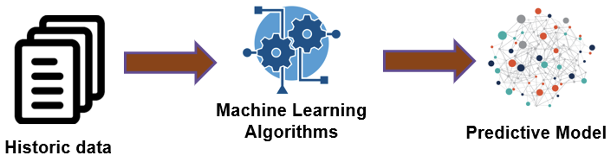
Machine Learning algorithms, perspectives, and real-world application: Empirical evidence from United States trade data (Sakshi Aggarwal, 2023)
ML vs. Traditional Programming
- Traditional: Rules + Data → Computer → Answers
- You write
if "FREE!!!" in subject: spam
- You write
- Machine learning: Data + Answers → Computer → Rules
- You give 10,000 labeled emails; the algorithm produces the rule: the model.
- 📌 ML is the tool for problems where the rules are too complex, unknown, or constantly changing to write by hand.
Where Machine Learning Fits in AI
- Artificial Intelligence → Machine Learning (this course) → Deep Learning → LLMs
- ChatGPT is one member of the family.
- This course teaches the family: the concepts every member shares.
What is a Model?
\[\hat{y} = f_{\theta}(x)\]
- Linear example: \(f_{\theta}(x) = \theta_0 + \theta_1 x\)
- \(x\) input · \(\hat{y}\) prediction · \(\theta\) learned parameters
What is an Algorithm?
\[\mathcal{A} : (\textit{data},\ \textit{hyperparameters}) \rightarrow f_{\theta^{*}}\]
- 🗂️ Input: training data and hyperparameters
- 🔧 Process: optimization rules
- 🤖 Output: a trained model \(f_{\theta^{*}}\)
- Ex: gradient descent trains regression models
Model vs Algorithm
- 🤖 Model: a mathematical function that makes predictions
- ⚙️ Algorithm: a method that adjusts the model’s parameters using data
- 📌 These terms are sometimes used interchangeably in casual conversation.
Example: Predicting Rideshare Price
Goal: Predict the price of a ride using input features.
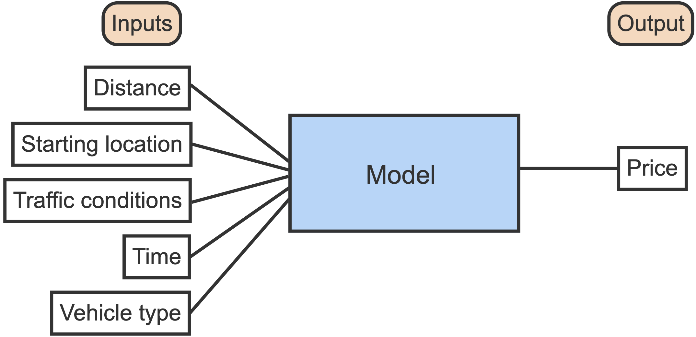
Machine Learning (zyBooks, 2025)
What is a Dataset?
- Features = columns — time, price, vehicle type
- Instances = rows — one rideshare trip
| distance | cab_type | time_stamp | destination | price | surge_multiplier |
|---|---|---|---|---|---|
| 1.3 | Uber | 08:04.4 | Theatre District | 17.5 | 1 |
| 1.35 | Lyft | 22:57.4 | South Station | 7 | 1 |
| 1.1 | Lyft | 15:09.6 | Financial District | 13.5 | 1 |
Machine Learning (zyBooks, 2025)
Input and Output Features
- Inputs (predictors, \(\mathbf{X}\)): what you know
- Output (target, response, \(\mathbf{y}\)): what you want to find out
- Ex: distance → model → price
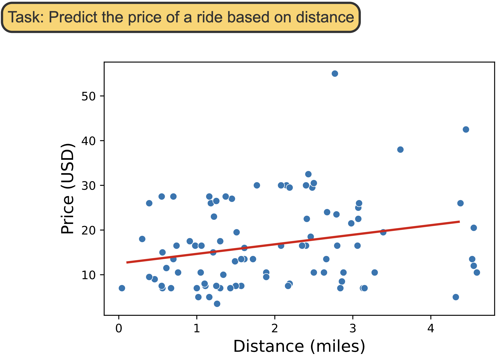
Machine Learning (zyBooks, 2025)
Knowledge Check
- Goal: predict which nurses are likely to quit
- Which feature is the target?
- Which are the inputs?
| Employee ID | Age | Quit? | Department | Daily rate |
|---|---|---|---|---|
| 1415194 | 34 | No | Maternity | 404 |
| 1620383 | 30 | No | Maternity | 1312 |
| 1533398 | 25 | Yes | Cardiology | 383 |
| 1479961 | 35 | No | Maternity | 982 |
| 1570909 | 38 | No | Cardiology | 508 |
Types of Machine Learning
- Supervised — data has labels → Regression (predict a number) · Classification (predict a category)
- Unsupervised — no labels, find structure → Clustering (group similar rows) · Dimension reduction (compress columns)
- Reinforcement — learn from rewards
Supervised Learning
- Learns from labeled data: inputs and correct outputs
- Regression → numbers, e.g., ride price $17.32
- Classification → categories, e.g., cat vs. dog
- 📌 Numeric output = regression; categorical = classification
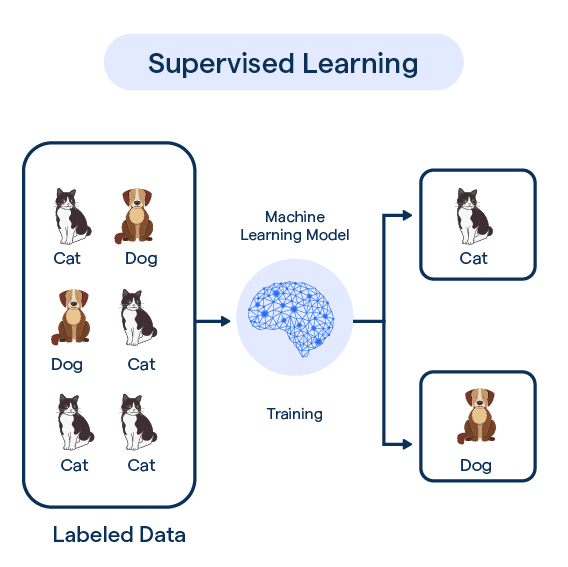
Supervised Learning: Types and Techniques (Bot Pengiun, 2024)
Unsupervised Learning
- Finds structure in unlabeled data — no output labels
- Clustering: commuters, sports fans, tourists
- Outlier detection: rides with abnormally high prices
- Dimensionality reduction: transforming data, e.g., PCA
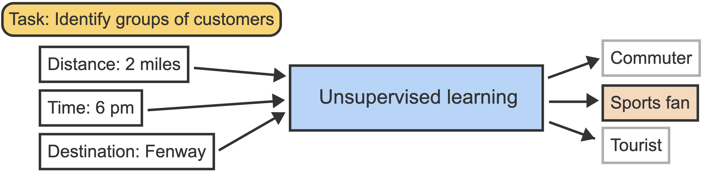
Machine Learning (zyBooks, 2025)
Reinforcement Learning
- Learns by trial and error: take actions, receive feedback
- Agent: the decision-maker
- Environment: where it operates
- Reward: feedback after an action
- Ex: a self-driving car earns rewards for staying in its lane
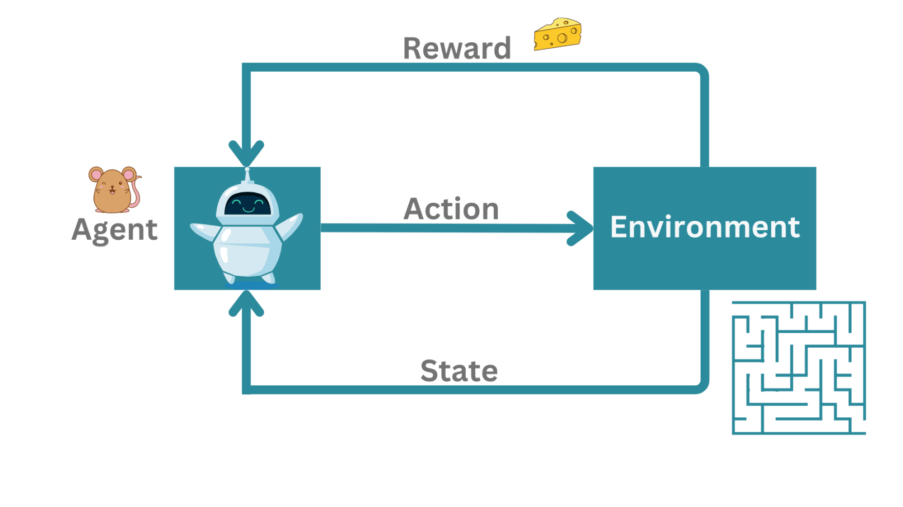
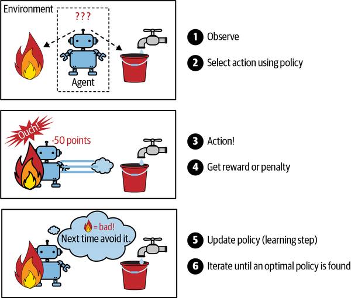
- Reinforcement Learning: Teaching Computers to Make Optimal Decisions (Bala Priya C, 2023)
- Hands-On Machine Learning with Scikit-Learn, Keras, and TensorFlow (Aurélien Géron, 2019)
Semi-Supervised Learning
- Small labeled set + large unlabeled pool
- Ex: 100 rides priced, 10,000 not
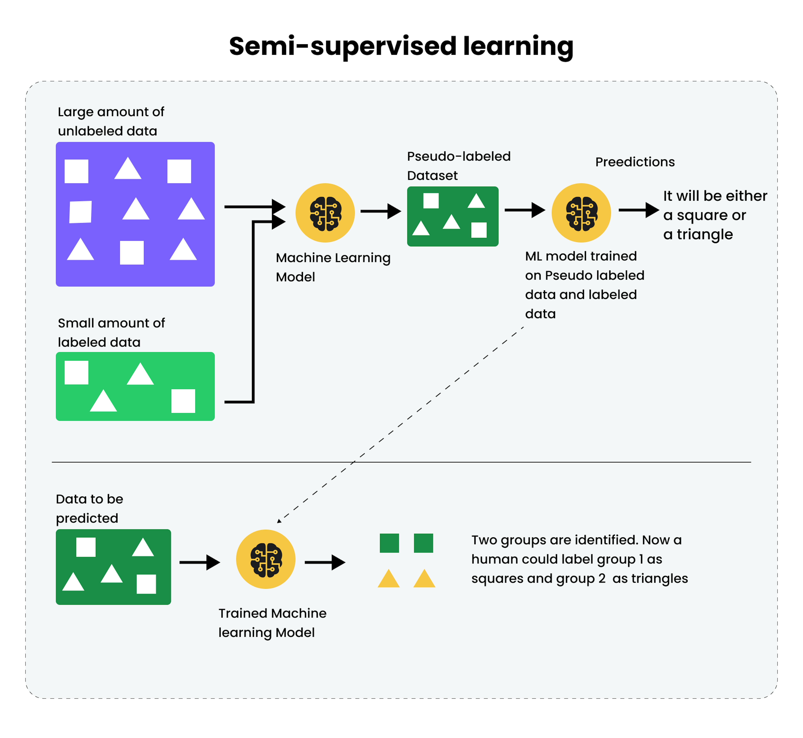
Semi-Supervised Learning Explained: Techniques and Real-World Applications (Roman Panarin, 2024)
Self-Supervised Learning
- Creates its own labels from unlabeled data
- 📘 NLP: mask a word, train the model to guess it
- 📷 Vision: predict the missing part of an image
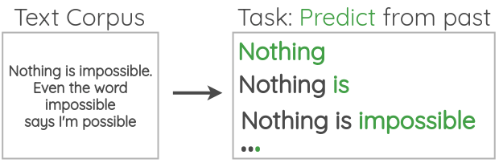
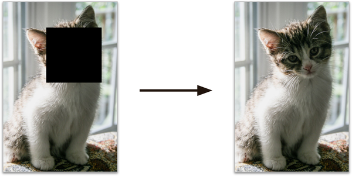
- Hands-On Machine Learning with Scikit-Learn, Keras, and TensorFlow (Aurélien Géron, 2019)
- Self Supervised Representation Learning in NLP (Amit Chaudhary, 2020)
Knowledge Check
Match each task to a learning type:
- Chemotherapy dosage from a patient’s response
- Predicting whether a nurse is likely to quit
- Grouping patients from EHRs, no outcome labels
- Pretraining on clinical notes by predicting masked words
- 100 labeled X-rays + 10,000 unlabeled
Where Are We Now?
- ✅ Introduction to machine learning
- ▶︎ Features and model
- ⏳ Bias-variance tradeoff
- ⏳ Machine learning workflow
Types of Features
- Categorical: no numeric meaning — “Yes”/“No”, customer type
- Numerical: measurable quantities — age, income, amount
- 📌 Some numeric-looking values (e.g., ZIP code) might be categorical.
| distance | cab_type | time_stamp | destination | price | surge_multiplier |
|---|---|---|---|---|---|
| 1.3 | Uber | 08:04.4 | Theatre District | 17.5 | 1 |
| 1.35 | Lyft | 22:57.4 | South Station | 7 | 1 |
Machine Learning (zyBooks, 2025)
Exploratory Data Analysis
- Explore patterns with graphs and summary statistics
- Distributions · correlations · outliers
- 💡 EDA shapes feature selection and preprocessing
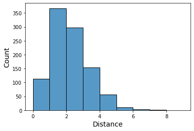
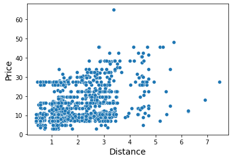
Machine Learning (zyBooks, 2025)
Classification Models
- Predicts categories from input features
- Output: discrete class labels — Yes / No
- Ex: accept or decline an offer
- Models: logistic regression, naïve Bayes, k-NN, decision trees, SVM, neural nets
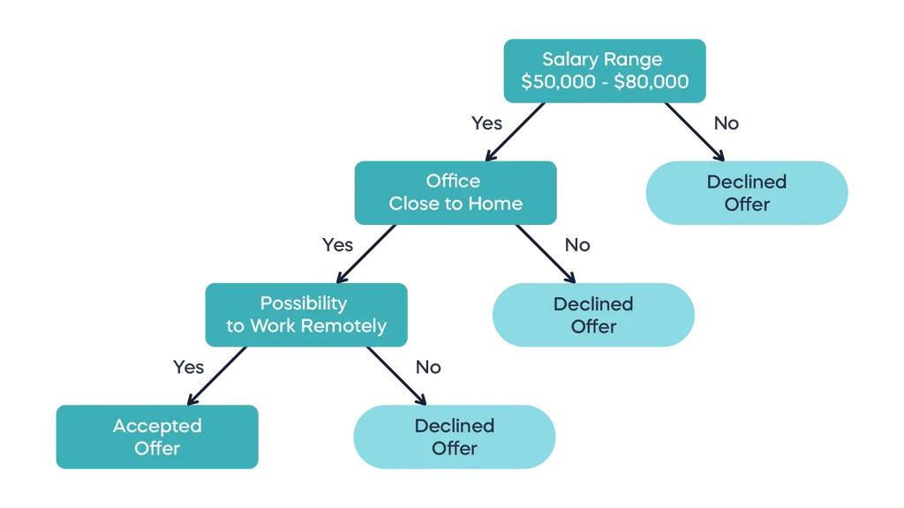
Introduction to Decision Trees: Why Should You Use Them? (The 365 Team, 2024)
Regression Models
- Predicts continuous numbers
- Output: a real value, e.g., $70,065
- Ex: predict the salary of an offer
- Models: linear regression, regression trees, k-NN regression
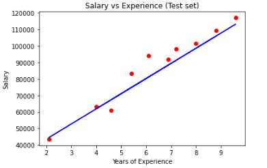
Simple Linear Regression model to predict the Salary based on Years of Experience (Yash Kulkarni, 2023)
Unsupervised Models – Clustering
- Groups similar observations — no labels
- Ex: K-Means, hierarchical clustering
- Use: customer segmentation, behavior profiling
- Output: cluster assignments (Cluster 1, Cluster 2)
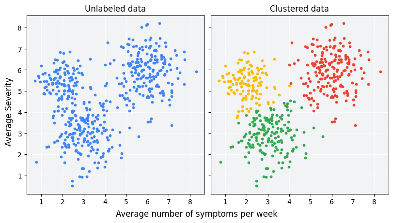
What is clustering (Google Machine Learning Education, 2025)
Unsupervised Models – Outlier Detection
- Finds rare instances that break the pattern
- Ex: DBSCAN
- Use: fraud detection, error checking
- No labels required — anomalies come from the data itself
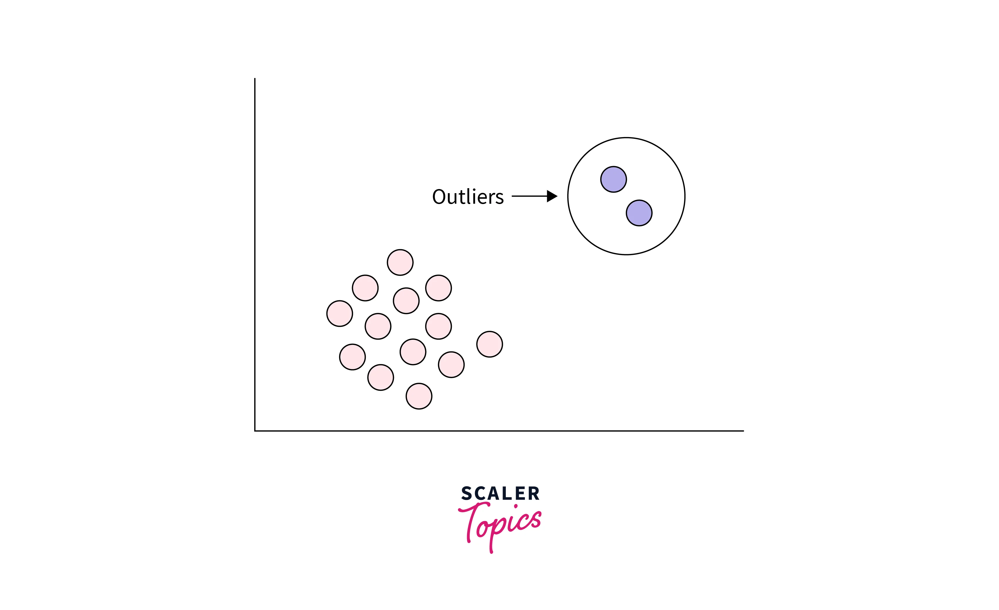
Outlier Analysis in Data Mining (Scaler, 2023)
Unsupervised Models – Dimension Reduction
- Simplifies high-dimensional data, keeps the structure
- Ex: PCA — combine distance & time into features capturing variance
- Use: compression, noise reduction, 2D visualization

Dimension Reduction (Anna Schaar, 2023)
Knowledge Check
Match each task to: dimension reduction, outlier detection, or clustering.
- Group customers as “frequent user”, “sports fan”, “commuter”
- Identify customers with unusual behavior
- Combine trip distance and rating into a quality measure
Where Are We Now?
- ✅ Introduction to machine learning
- ✅ Features and model
- ▶︎ Bias-variance tradeoff
- ⏳ Machine learning workflow
Generalization: The Goal of Machine Learning
- A model that memorizes its training data can score 100% on it and still be useless
- What matters is performance on data it has not seen
- That target is generalization
- The test set estimates it: it simulates the future
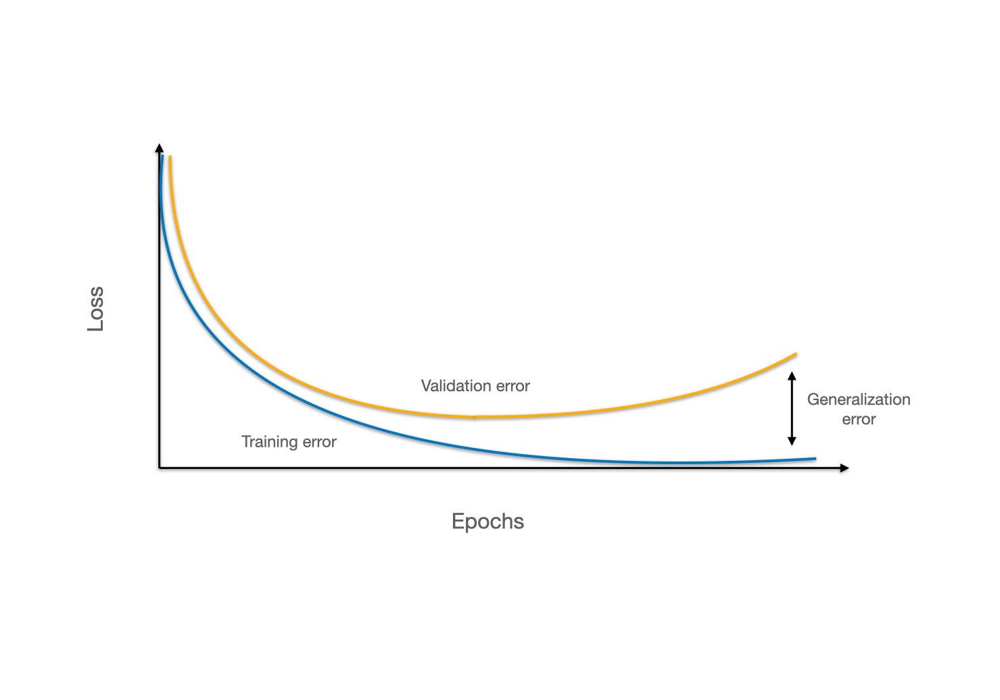
What is Bias in ML?
- Systematic error from overly strong assumptions
- Persists no matter how much data you collect
- High bias → too simple → underfits
- Ex: predicting every ride’s price with one constant
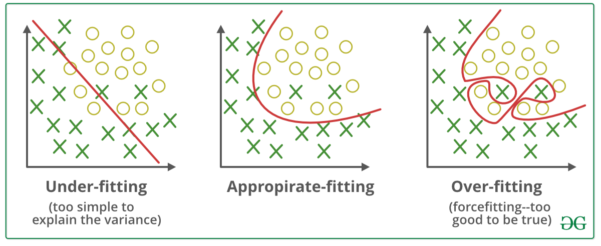
Predicted vs. Actual (Monolith AI, 2023)
What is Variance in ML?
- How much predictions fluctuate across subsets of the same data
- High variance → too complex → overfits
- Right on one dataset, wrong on the next
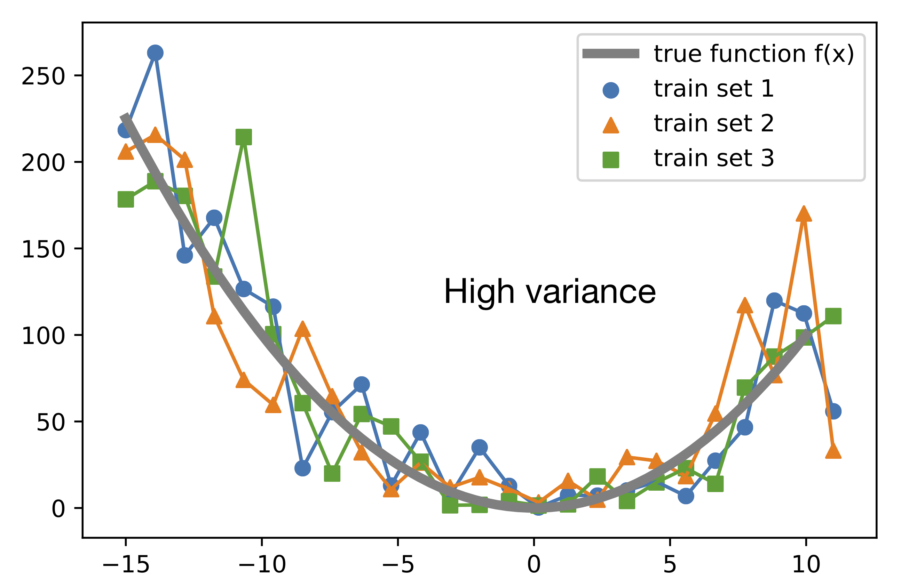
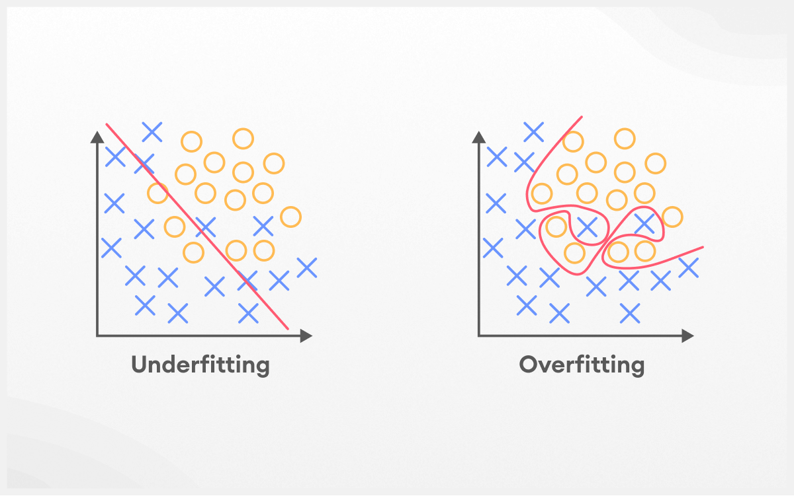
Bias-variance decomposition for classification and regression losses (mlxtend)
Bias-variance Trade-off
- Simple models: high bias, low variance
- Complex models: low bias, high variance
- Goal: the sweet spot — best generalization
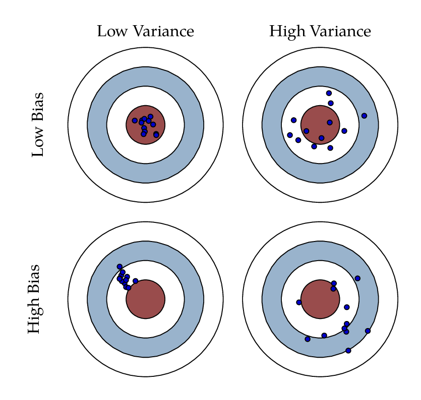
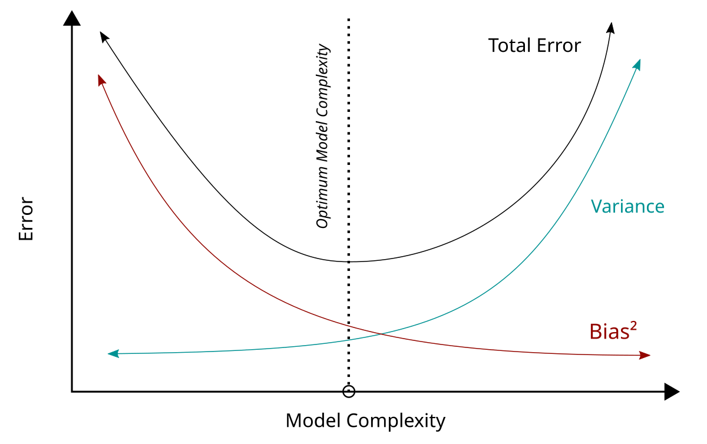
Bias–variance tradeoff (Wikipedia, 2025)
Generalizing
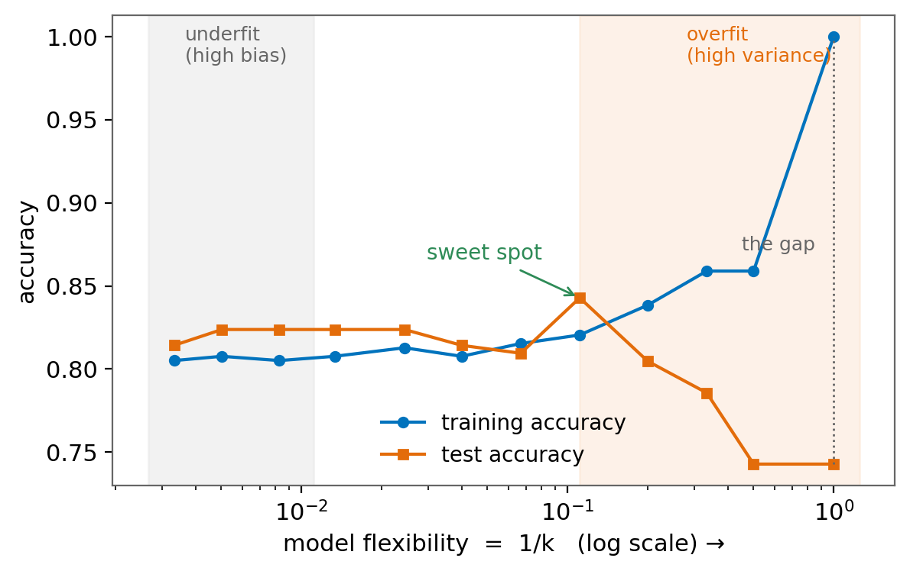
- Training accuracy rises monotonically; test accuracy rises, peaks, then falls.
- The goal is to find the sweet spot: enough model complexity to learn the underlying pattern in the dataset.
Knowledge Check
- Which model has the greatest prediction variance?
- Which model is most likely underfitted?
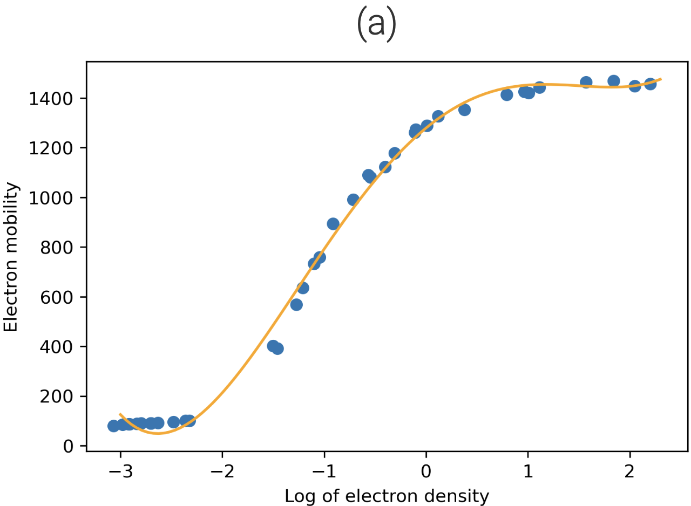
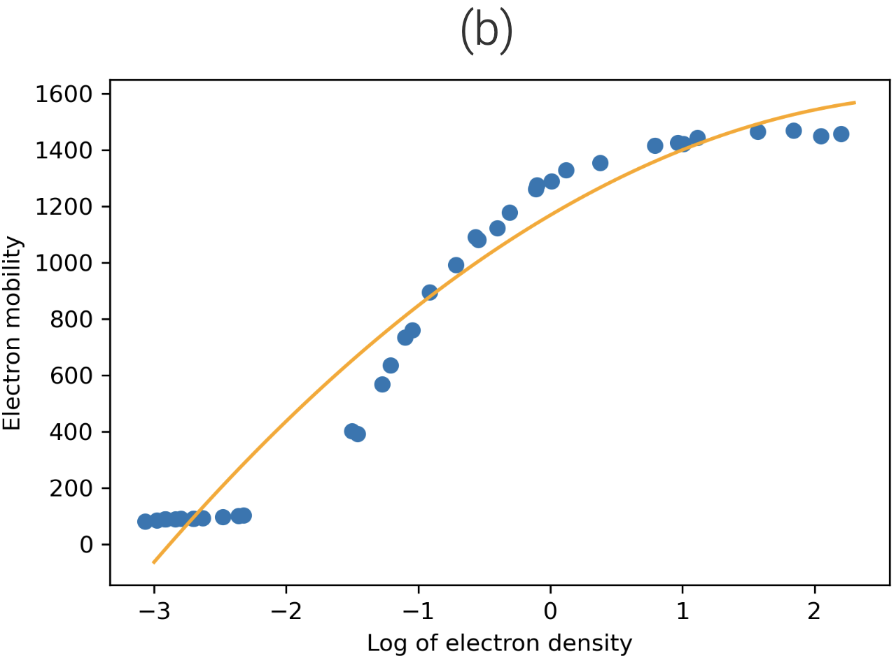
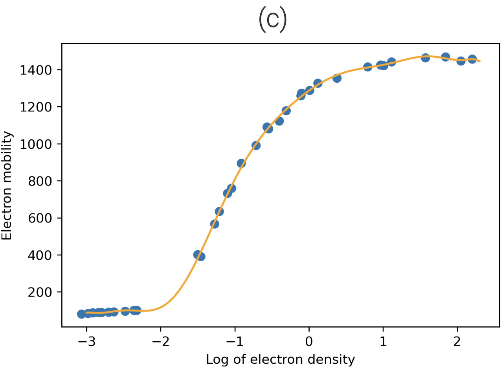
Machine Learning (zyBooks, 2025)
Where Are We Now?
- ✅ Introduction to machine learning
- ✅ Features and model
- ✅ Bias-variance tradeoff
- ▶︎ Machine learning workflow
Machine Learning Workflow
- Frame — what is x? what is y? what is success?
- Get & split data — hold some data back
- Preprocess — clean, encode, scale
- Train — fit a model to training data
- Evaluate — metrics on held-out data
- Interpret & act — explain, decide, communicate
Introduction to scikit-learn
- Python library for building ML models
- Key concept: an estimator fits a model or algorithm
- Covers supervised + unsupervised models, preprocessing, training, evaluation
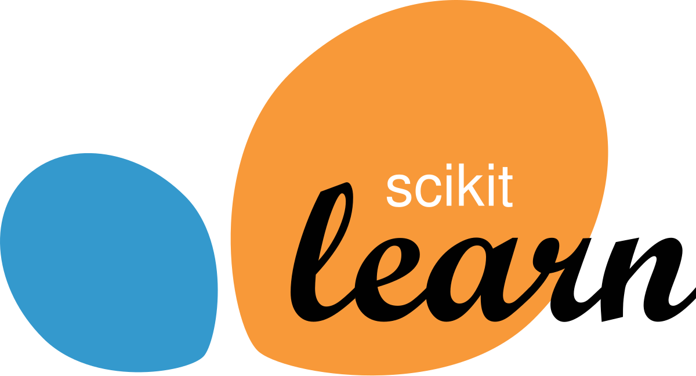
Practice: The ML Workflow
- Build a supervised learning pipeline, then evaluate it
- 📥 Download
modeling_the_ml_workflow.ipynbfrom Canvas - 🌐 Open https://colab.research.google.com
- ⬆️ Upload and run the notebook
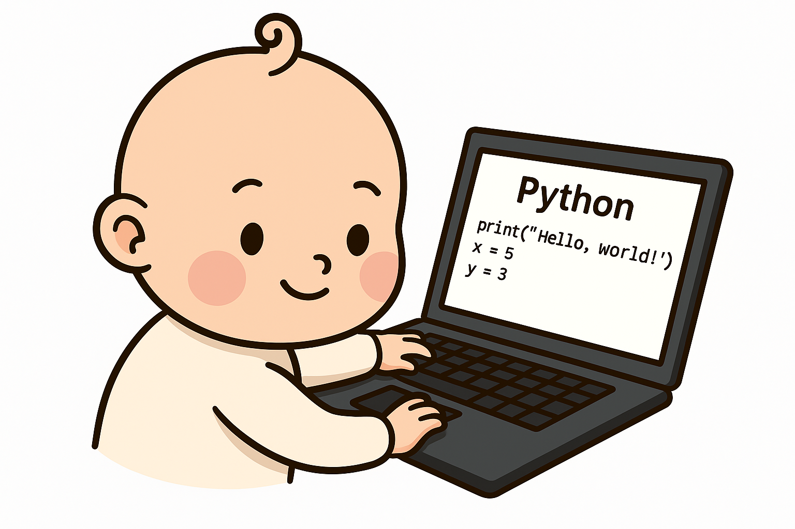
DALL·E (ChatGPT), 2025
Summary – Key Takeaways
- Machine learning learns patterns from data to make predictions or discover structure.
- The learning approach depends on the data, labels, and task.
- Successful models must perform well on unseen data, not just training data.
Further Reading
- 📘 A Hands-On Introduction to Machine Learning (Chirag Shah, 2022)
- 📖 Read Chapter 1
- Google’s ML Crash Course
- How to Prevent Overfitting (Ken Hoffman, 2021)
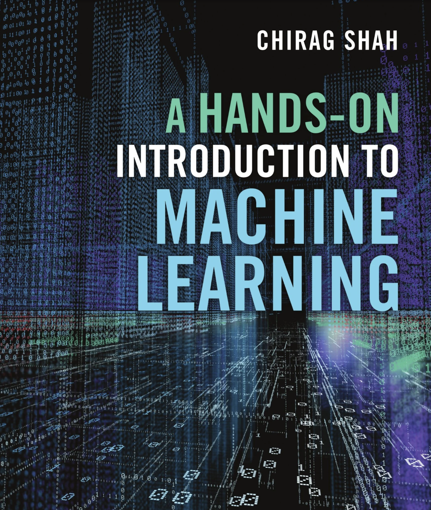